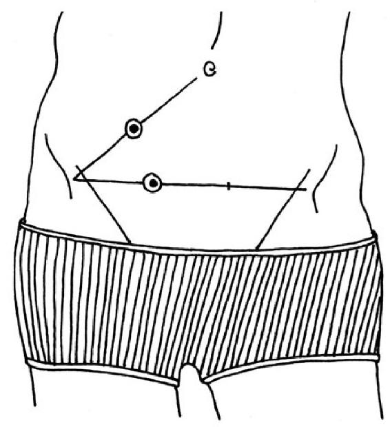

SOME THINGS TURN out to be a disappointment once you get to know them better. Those chocolate wafers from the television commercial are not lovingly hand-baked by housewives in country dresses—they come from a factory with neon strip lighting and workers at production lines. School turns out to be much less fun than you thought it would be on the first day. It’s warts and all in the backstage area of life, where there is a lot that looks much better from a distance than up close.
That is not the case for the gut, however. Our intestinal tube looks rather odd from a distance. Beyond the mouth, a 1-inch- (2-centimeter-) wide esophagus, or gullet, leads down from the throat, misses the top of the stomach, and passes into it somewhere at the side. The right-hand side of the stomach is much shorter than the left, which is why it curls up into a crescent-shaped, lopsided pouch. The small intestine meanders with no particular sense of direction, sometimes to the right, sometimes to the left, for all its length (about 20 feet, or 6 meters) until it eventually passes into the large intestine. That’s where we find the apparently useless appendix, which seems to be incapable of doing anything except getting infected. The large intestine is also full of bulges. In fact, it looks a little like a sorry attempt to replicate a string of beads. Seen from a distance, the gut is an unsightly, charmless, asymmetrical tube.
So, let’s forget the view from a distance and zoom in for a closer look. There is scarcely another organ in our body that becomes increasingly fascinating the closer you get. And, the more you know about the gut, the more beautiful it appears. So, let’s look at some of those strange structures a little more closely.
The Lanky Esophagus
THE FIRST THING we notice about this long, slender organ is that it can’t aim properly. Rather than taking the shortest route and aiming for the middle of the stomach, it enters the organ on the right-hand side. This is a smart move. Surgeons would call such a connection terminolateral. It may mean taking a little detour, but it’s well worth it. When simply walking normally, we tense our abdominal muscles, doubling the pressure in our abdomen with every step we take. When we laugh or cough, for example, that pressure increases by several times. Since the abdomen presses against the stomach from below, it would be a bad idea for the esophagus to dock directly onto the top end of the stomach. Connected as it is at the side, it has to deal with only a fraction of the pressure. It is thanks to this arrangement that we can take a walk after a heavy meal without having to burp with every step. This clever angle and its closing mechanism are also to thank for the fact that, although a fit of laughter might result in us losing a little control over our outer sphincter and inadvertently letting out a little “laughing gas,” few people have been known to vomit from laughing.
A side effect of this lateral connection is the so-called gastric bubble. This small bubble of air at the top of the stomach can be seen clearly on X-rays. Air rises vertically, after all, and does not search out a side exit. This bubble is the reason many people find they have to swallow a little air in order to burp. This swallowing motion moves the opening of the esophagus a little closer to the bubble, and—hey presto!—the burp can make its upward journey to freedom. Those who need to burp while lying down can make the process easier by lying on their left side. So, if you’re kept awake at night by a bloated stomach and you are lying on your right side, the best thing to do is simply to turn over.
In order better to illustrate the stomach bubble, this illustration does not show the correct distribution of black and white in a normal X-ray image. Normally, denser materials, such as teeth or bone, show up white, while less dense materials, such as the stomach bubble or the air in the lungs, show up as dark areas.
The lanky appearance of the esophagus is also more beautiful than it seems at first glance. Looking very closely, it can be seen that some muscle fibers run around the esophagus in a spiral pattern. They are the reason for its elasticity. If you extend these fibers lengthways, they constrict spirally, like a telephone receiver cable. Bundles of fibers connect the esophagus to the spinal column. Sitting up straight and looking upwards stretches the esophagus along its length. This causes it to narrow, in turn allowing it to close more efficiently at each end. That is why sitting or standing up straight can help prevent heartburn after a large meal.
The Lopsided Stomach Pouch
OUR STOMACH SITS much higher in our abdomen than we think. It begins just below the left nipple and ends below the bottom of the ribcage on the right. Any pain felt farther down than this lopsided little pouch cannot be stomachache. Often, when people say they have stomach problems, the trouble is actually in the gut. The heart and the lungs sit on top of the stomach. This explains why we find it more difficult to breathe deeply after eating a lot.
One condition often overlooked by general practitioners and family doctors is Roemheld syndrome, when so much gas collects in the stomach that it presses up against the heart and the nerves in the gut. Sufferers can display a range of different symptoms, including dizziness and discomfort. In more severe cases, Roemheld syndrome can cause anxiety or difficulty in breathing, and may also lead to severe chest pain that feels like a heart attack. Doctors often write off undiagnosed Roemheld sufferers as overanxious malingerers whose symptoms are all in their mind. A more useful approach would be to ask patients if they have tried burping or passing wind. In the long term, it may be better for such patients to avoid any food that leaves them bloated or flatulent, take measures to restore the balance of the stomach or gut flora, and avoid drinking alcohol to excess. Alcohol can multiply the number of gas-producing bacteria by a factor of up to a thousand. In fact, some bacteria feed on alcohol (which is why rotten fruit tastes alcoholic). With a gut full of busy gas producers, a night on the town can lead to a morning chorus of the pungent kind. So much for the “alcohol is a disinfectant” argument!
Now let us turn to the stomach’s strange shape. One side is much longer than the other and so the entire organ has to bend double. That creates large folds inside it. The stomach could be called the Quasimodo of the digestive organs. But its misshapen appearance has a deeper meaning. When we take a drink of water, the liquid can flow straight down the shorter, right-hand side of the stomach to end up at the entrance to the small intestine. Food, on the other hand, plops against the larger side of the stomach. Our digestive pouch cunningly separates the substances it still needs to work on to break them down, from the fluids that it can wave straight on through to the next digestive station. So our stomach is not simply lopsided; rather, it has two sides with different specializations. One side copes better with fluids, the other with solids. Two stomachs for the price of one, so to speak.
The Meandering Small Intestine
THE SMALL INTESTINE meanders about in our abdominal cavity, twisting and turning for a distance of between 10 and 20 feet (3 and 6 meters). If we bounce on a trampoline, it bounces along with us. When the plane we’re sitting on takes off, it is pressed into the back of the seat like the rest of us. When we dance, it merrily wobbles along to the music, and when abdominal pain makes us wince, its muscles wince in a similar way.
There are few people in the world who have seen their own small intestine. Even doctors usually examine only the large intestine when they perform a colonoscopy. But those who do get the rare opportunity of seeing their small intestine by swallowing a pill-sized camera are likely to be surprised. Most expect to encounter a gloomy tunnel, but what they see is a very different creature: moist, pink, with a velvety sheen and somehow delicate looking. Most people do not realize that only the final three feet or so (about the last meter) of our large intestine has anything to do with feces—the preceding sections of our intestinal tract are surprisingly clean (and largely smell-free, incidentally). Our gut faithfully and tastefully takes on everything we swallow down to it.
At first sight, the small intestine seems rather more haphazard in its design than our other organs. The heart has its four chambers, the liver has its lobes, veins have valves, and the brain has specialized areas—but the small intestine just wanders aimlessly about in our abdomen. Its true design becomes clear at the microscopic level. We have here a creature that epitomizes the phrase “love of detail.”
Intestinal villi, microvilli, and glycocalyxes. One millimeter (mm) is slightly less than ⅟16 of an inch.
Our gut wants to offer us as much surface area as possible. That is why it loves folds—including the folds we can see with the naked eye. Without folds, our small intestine would need to be up to 60 feet (18 meters) long to provide us with enough surface area for our digestion. So, here’s to folds! But a perfectionist like the small intestine doesn’t stop there. Each square inch of its surface contains about 20,000 tiny fingerlike projections (or about 30 projections per square millimeter). These projections, called villi by scientists, protrude out into the mush of partly digested food, the medical word for which is “chyme.” The villi’s size means they appear as a velvety structure to the unaided human eye. Under the microscope, the little villi look like large waves made out of cells. (Velvet looks very similar under a microscope.) Even greater magnification reveals that each and every one of those cells is itself covered with little protrusions—the microvilli: villi on villi, if you like. The microvilli are, in turn, covered with a velvety meshwork made of countless sugar-based structures that look a little bit like antlers. These are called the glycocalyxes. If all this—the folds, the villi, and the microvilli—were ironed out to a smooth surface, our small intestine would have to be some 4½ miles (7 kilometers) long.
Why does the small intestine have to be so huge, anyway? In total, the surface area of our digestive system is about one hundred times greater than the area of our skin. That seems a little excessive just to deal with a small portion of fries or a single apple. But this is what it’s all about inside our belly: we enlarge ourselves as much as possible in order to reduce anything from outside to the smallest size we can, until it is so tiny that our body can absorb it and it eventually becomes a part of us.
We begin that process in the mouth. A bite of an apple sounds like such a juicy idea because, when we take that bite, our teeth burst millions of apple cells like tiny balloons. The fresher the apple is, the more of its cells remain intact—which is why we can tell how fresh the fruit is by its crispness as we bite into it.
Just as we prefer crisp, fresh fruit, we also love hot, protein-rich food. We find steak, scrambled eggs, or fried tofu more appetizing than raw meat, slimy eggs, or cold bean curd. That’s because we have an intuitive understanding of how digestion works. If we swallow a raw egg, it will undergo the same processes in our stomach as it would in the frying pan. The white of the egg turns opaque, the yolk takes on a pastel color, and both set and become solid. If we were to vomit the raw egg back up after the right amount of time, the results would look like almost perfect scrambled eggs—without any cooking! Proteins react to the heat in the hot pan and the acid in our stomach in the same way—they unfold. That means they no longer possess the clever design features that make them soluble in the liquid of the egg white, so they form solid white lumps. In this state, they can be digested far more easily in the stomach and the small intestine. Cooking food saves us the whole first burst of energy required to unfold those proteins, which would otherwise have to be expended by the stomach. By preferring cooked food, the body outsources the first part of the digestive process.
The final breakdown of the food we eat takes place in the small intestine. Right at the start of this part of the gut there is a small opening in its wall. This is the duodenal papilla—similar to the salivary papillae in our mouth, but bigger. It is through this little hole that digestive juices are squirted onto the chyme. As soon as we eat something, the liver and pancreas begin to produce these juices and deliver them to the papilla. These juices contain the same agents as the laundry detergent and dish soap you can buy from any supermarket: digestive enzymes and fat solvents. Laundry detergent is effective in removing stains because it “digests out” any fatty, protein-rich, or sugary substances from your laundry, with a little help from the movement of the washing-machine drum, leaving these substances free to be rinsed down the drain with the dirty water. That is more or less the same as what happens in our small intestine. The main difference is that the pieces of protein, fat, or carbohydrates that are broken down in the intestine ready to be transported to the bloodstream through the gut wall are huge by comparison. A bite of an apple is then no longer a bite of apple, but a nutritious pulp made up of billions and billions of energy-rich molecules. Absorbing them all requires a huge surface area—a length of 4½ miles (7 kilometers) is just about enough. That also leaves some space as a safety buffer, in case parts of the gut are temporarily put out of action by infection or gastric flu.
Each individual villus contains a tiny blood vessel—a capillary—that is fed with the absorbed molecules. All the small intestine’s blood vessels eventually come together and carry the blood to the liver, where the nutrients are screened for harmful substances and toxins. Any dangerous substances can be destroyed here before the blood passes into the main circulatory system. If we eat too much, this is where the first energy stores are created. The nutrient-rich blood then flows from the liver directly to the heart. There, it receives a powerful push and is pumped to the countless cells of our body. In this way, a sugar molecule can end up in a skin cell in your right nipple, for example, where it is absorbed and then “burned” along with oxygen. That releases energy, which the cell uses to stay alive, with heat and tiny amounts of water created as byproducts. This happens inside so many cells at the same time that the heat produced keeps our body at a constant temperature of 97 to 99 degrees Fahrenheit (36 to 37 degrees Celsius).
The basic principle underlying our energy metabolism is simple. Nature requires energy to ripen an apple on the tree. We humans come along and break the apple down into its constituent molecules and metabolize them for energy. We then use the energy released to keep us alive. All the organs that develop out of that embryonic gut tube are able to provide fuel for our cells. Our lungs, for example, do nothing other than absorb molecules with every breath we take. Thus, “breathing in” really means “taking in nourishment in gaseous form.” A good proportion of our body weight is made from such inhaled atoms and not from cheeseburgers. Indeed, plants draw the majority of their weight from the air and not from the soil they grow in . . . I hope I haven’t just inadvertently provided the next dubious diet idea to appear in women’s magazines!
So, all our body’s organs use up energy, but it is from the small intestine that we start to get some energy back. That explains why eating is such a pleasant pastime. However, we can’t expect to feel a burst of energy as soon as we have swallowed the last mouthful of a meal. In fact, many people find they feel tired and sluggish after eating. The food has not yet reached the small intestine—it is still in the preparatory stages of digestion. We no longer feel hungry because our stomach has been expanded by the food we’ve eaten. But we feel just as sluggish as we did before the meal, and now we have to come up with the extra energy for all that mixing and breaking down. To achieve this, a large amount of blood is delivered to our digestive organs, and many researchers also believe that postprandial tiredness may be due to the resulting reduced blood supply to the brain.
One of my professors always dismissed that idea, arguing that if all the blood in our head were diverted to our stomach we would be dead, or at least unconscious. Indeed, there are other possible causes of the fatigue that follows eating. Certain messenger chemicals released by the body when we are full can also stimulate the areas of the brain responsible for tiredness. This tiredness is perhaps inconvenient for our brain when we are at work, but the small intestine welcomes it. It works most effectively when we are pleasantly relaxed. It means the optimum amount of energy is available for digestion and our blood is not full of stress hormones. The phlegmatic after-lunch reader is a more efficient digester than the stressed-out office executive.
The Unnecessary Appendix
and the Bulgy Large Intestine
THERE ARE NICER things in life than lying on an examining table at the doctor’s with one thermometer in your mouth and another in your behind. But that used to be the standard examination in cases of suspected appendicitis. A significantly higher temperature down below than in the mouth was a major indication. Modern doctors no longer need to rely on temperature differences to diagnose appendicitis. Important symptoms are fever in combination with pain below and to the right of the belly button (the position of the appendix in most people).
Often, pressing that side of the lower abdomen will cause pain, while, curiously, pressing the other side will relieve it. As soon as pressure on the left-hand side is released—ouch! This is because our abdominal organs are surrounded by a supporting fluid. When pressure is applied to the left-hand side, extra support fluid is pushed over to the right, where it provides additional cushioning for the inflamed gut, which relieves pain. Other signs of appendicitis are pain when raising the right leg against a resistant pressure (get someone to push against it), lack of appetite, and nausea.

Our appendix, officially known as the vermiform, or worm-shaped, appendix, has a reputation for being useless. Looking like a deflated balloon of the kind children’s party entertainers twist into animal shapes, the appendix is not only too small to deal with chyme, it is also positioned in a location that partly digested food hardly ever reaches. It is just below the junction between the small and large intestines, and is completely bypassed. This is a creature that can only look on from below as the world continues on its way above. Those of you who remember the bumpy landscape in your mouth might have an idea what its true function could be. Although far removed from the rest of its kind, the appendix is part of the tonsillar immune tissue.
Our large intestine takes care of things that cannot be absorbed in the small intestine. For that reason, it does not have the same velvety texture. It would simply be a waste of energy and resources to fill this part of the gut with absorbent villi. Instead, the large intestine is the home of most of our gut bacteria, which can break down the last nutritious substances for us. And our immune system is very interested in these bacteria.
So, the vermiform appendix couldn’t be better placed. It is far enough away so as not to be bothered by all the digestive business going on above it, but close enough to monitor all foreign microbes. Although the walls of the large intestine include large deposits of immune cells, the appendix is made almost entirely of immune tissue. So, if a bad germ comes by, it is surrounded. However, that also means that everything around it can become infected—360-degree, panoramic inflammation, so to speak. If this inflammation causes the appendix to swell, the little tube has problems sweeping itself clean of those bad germs—leading to one of the more than 270,000 appendectomies carried out every year in the United States alone.
However, that is not the only function of the appendix. It leaves only good germs alive and attacks anything it sees as dangerous, and this also means a healthy appendix acts as a storehouse of all the best, most helpful bacteria. This was discovered by American researchers Randal Bollinger and William Parker in 2007. Its practicality comes into play after a heavy bout of diarrhea. That will often flush away many of the typical gut microbes, leaving the terrain free for other bacteria to settle. This should not be left to chance. And this is when, according to Bollinger and Parker, the appendix team steps in and spreads out protectively throughout the entire large intestine.
In most parts of North America and northern Europe, we do not have many pathogens that cause diarrhea. We may pick up a gastrointestinal flu bug every now and then, but our environment teems with much less dangerous microbes than in India or Spain, for example. So you could say that we do not need our appendix as urgently as the people in those regions. That means no one in areas with few diarrhea-inducing pathogens who has undergone an appendectomy, or is about to face one, should be too worried. The immune cells in the rest of the large intestine may not be quite so closely packed, but in total, they are many times more numerous than those in the appendix, and they are competent enough to take on the job. Anyone who wants to take no chances after a bout of diarrhea can buy good bacteria at the pharmacy to repopulate their gut.
So now, I hope, it is clear why we have an appendix. But what’s the purpose of the large intestine that it is appended to? Nutrients have already been absorbed, there are no villi here, and what does our gut flora want with indigestible leftovers anyway? Our large intestine does not wind about like its smaller counterpart. It surrounds our small intestine on the outside, like a plump picture frame. And it would not take exception to being called plump—it simply needs more room to do its job.
“Waste not, want not” may sound hackneyed today, but for past generations it was a way to survive lean times. And it is also the motto of our large intestine. It takes its time with all the leftovers and digests them thoroughly. The small intestine can get on with processing the next meal, or even the next two, in the meantime, without affecting the large intestine’s work. It doggedly processes leftovers for sixteen hours or so. In doing so, it makes available substances that would have been lost if the gut were more hurried. They include important minerals like calcium, which can only be absorbed properly here. The careful cooperation of the large intestine and its flora also provides us with an extra helping of energy-rich fatty acids, vitamin K, vitamin B12, thiamine (vitamin B1), and riboflavin (vitamin B2). Those substances are useful for many things—for example, to help our blood clot properly, to strengthen our nerves, or to prevent migraines. In the final three feet or so (about the last meter) of the large intestine, our water and salt levels are finely tuned. Not that I’m recommending a taste test, but the saltiness of our feces always remains the same. This fine-balancing act saves the body an entire quart (or liter) of fluids, which we would have to make up by drinking that much more per day.
As with the small intestine, all the treasures absorbed by the large intestine are transported first to the liver for checking, before entering the main blood system. The final few inches (or centimeters) of the large intestine, however, do not send their blood to the detoxifying liver; blood from their vessels goes straight into the main circulatory system. This is because, generally, nothing more is absorbed in this section, simply because everything useful has already been removed. But there is one important exception: any substances contained in a medical suppository. Suppositories can contain much less medication than pills and still take effect more quickly. Tablets and fluid medications often have to contain large doses of the active agent because much of it is removed by the liver before it even reaches the area of the body it is meant to act on. That is, of course, less than ideal, since the substances recognized by the liver as toxins are the reason we take the medicine in the first place. So, if you want to do your liver a favor and still need to take fever-reducing or other medication, make use of the shortcut via the rectum and use a suppository. This is an especially good idea for very young or very old patients.